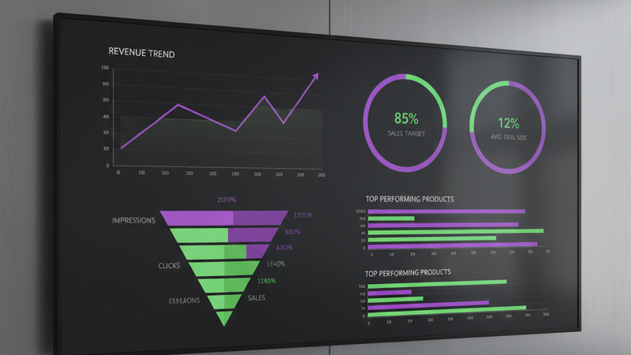

A sales performance dashboard is a visual tool that shows how your sales team and revenue are performing, all in one view. Instead of digging through your CRM or waiting for end-of-month reports, you see the numbers that matter every time you open it.
Whether you sell through a website, a sales team, or a combination of both, a sales performance dashboard answers the most important question in your business: "Are we selling enough, and how do we sell more?"
What should a sales performance dashboard track?
Every business is different, but the best sales dashboards track a core set of metrics that connect directly to revenue. Here are the key ones:
Revenue
Total revenue this month, this quarter, and year-to-date. Compared to the same period last year. This is the headline number and it should be impossible to miss on your dashboard.
Conversion rate
Of the people who enter your sales process, whether that means visiting your website, booking a call, or getting a quote, how many actually buy? A low conversion rate means you are losing potential customers somewhere in the funnel.
Average order value (AOV)
How much does each customer spend on average? Increasing AOV by even a small percentage can have a bigger impact on revenue than acquiring more customers, because it costs nothing extra to deliver.
Customer acquisition cost (CAC)
How much do you spend on marketing and sales to get each new customer? If your CAC is climbing while your revenue stays flat, you have a profitability problem that a dashboard will make visible immediately.
Deal pipeline
What is in your pipeline right now? How many deals are at each stage? What is the total value of deals expected to close this month? Pipeline visibility is one of the primary reasons to build a sales dashboard.
Sales cycle length
How long does it take from first contact to closed deal? If your cycle is getting longer, it might indicate pricing issues, process inefficiencies, or a mismatch between your marketing and your actual customer.
How to build a sales performance dashboard
You have three options, each suited to different situations:
Start with your existing tools
Most CRMs (HubSpot, Salesforce, Pipedrive) have built-in dashboards. These are a good starting point if your sales data lives in one platform. The limitation is that they only show data from that platform, you cannot easily combine it with website analytics, payment data, or email metrics.
Use a BI platform
Tools like Looker Studio, Databox, or Klipfolio let you connect multiple data sources. This is a step up from CRM dashboards because you can combine sales data with marketing data, giving you a fuller picture of what is driving revenue.
Build a custom dashboard
A custom-built dashboard connects to your exact data sources and is designed around how you make decisions. If your sales data comes from a CRM, a payment processor, and a website, a custom dashboard combines all three without you having to manually reconcile anything. For most growing businesses, this is the most practical long-term solution.
Start with these questions
Before building anything, write down the three questions you ask most often about your sales. "How are we tracking this month?" "Which channel brings the best customers?" "What is our pipeline worth?" A good sales dashboard answers those questions in under ten seconds.
Common mistakes to avoid
These are the pitfalls that turn a potentially useful sales dashboard into an expensive wall decoration:
- Tracking too many metrics. Twenty charts on one screen means you look at none of them. Pick the five to seven metrics that directly drive decisions and leave the rest for detailed reports.
- Ignoring context. A revenue number without comparison (last month, last year, target) is meaningless. Always show trends and comparisons, not just isolated figures.
- Building it and forgetting it. A dashboard needs to evolve. Review it monthly and ask: what am I not looking at? What question can I not answer? Adjust accordingly.
- Mixing leading and lagging indicators. Revenue is a lagging indicator, it tells you what already happened. Include leading indicators like pipeline value and conversion rates that tell you what is about to happen.
- Not sharing it. A dashboard that only one person sees limits its impact. Make sure your team has access and knows how to read it.
Getting started
You do not need to build everything at once. Here is a practical approach:
- Pick your top five metrics. Revenue, conversion rate, AOV, CAC, and pipeline value cover most businesses.
- Identify your data sources. Where does each metric live? CRM, payment processor, website analytics?
- Choose your tool. Start with what you have (CRM dashboard or Looker Studio) and upgrade to a custom build when you outgrow it.
- Set a review cadence. Look at the dashboard every morning for the first two weeks. After that, weekly is fine for most businesses.
- Refine. After a month, remove anything you never look at and add any questions you still cannot answer.
A sales performance dashboard is not about fancy technology. It is about seeing the numbers that drive your revenue so you can act on them faster. If you are ready to move from guesswork to clarity, get in touch and we will help you build one.
For more on choosing the right metrics, see our guide to KPI dashboard examples across industries.
Frequently asked questions
What is a sales performance dashboard?
A sales performance dashboard is a visual tool that displays your key sales metrics, revenue, conversion rates, pipeline value, and deal progress, in a single view. It pulls data from your CRM, payment processor, and other tools so you can track performance without logging into multiple apps.
What metrics should be on a sales dashboard?
The core metrics are revenue (by period and comparison), conversion rate, average order value, customer acquisition cost, pipeline value, and sales cycle length. The exact mix depends on your business model, but these six cover most sales teams.
How often should I update my sales dashboard?
Your dashboard should update automatically, either in real time or on a daily schedule. If you are manually updating it, you are using a spreadsheet, not a dashboard. The whole point is that the data refreshes without your intervention.
Can I build a sales dashboard in Google Sheets?
You can, but it has significant limitations. Google Sheets requires manual data entry, does not update automatically, and makes it difficult to visualise trends over time. It works for one-off analysis but not for ongoing sales tracking.
How is a sales performance dashboard different from a KPI dashboard?
A sales performance dashboard focuses specifically on revenue and sales metrics. A KPI dashboard is broader and can include metrics from marketing, operations, finance, and customer service. The main difference is scope, sales dashboards are a subset of KPI dashboards.